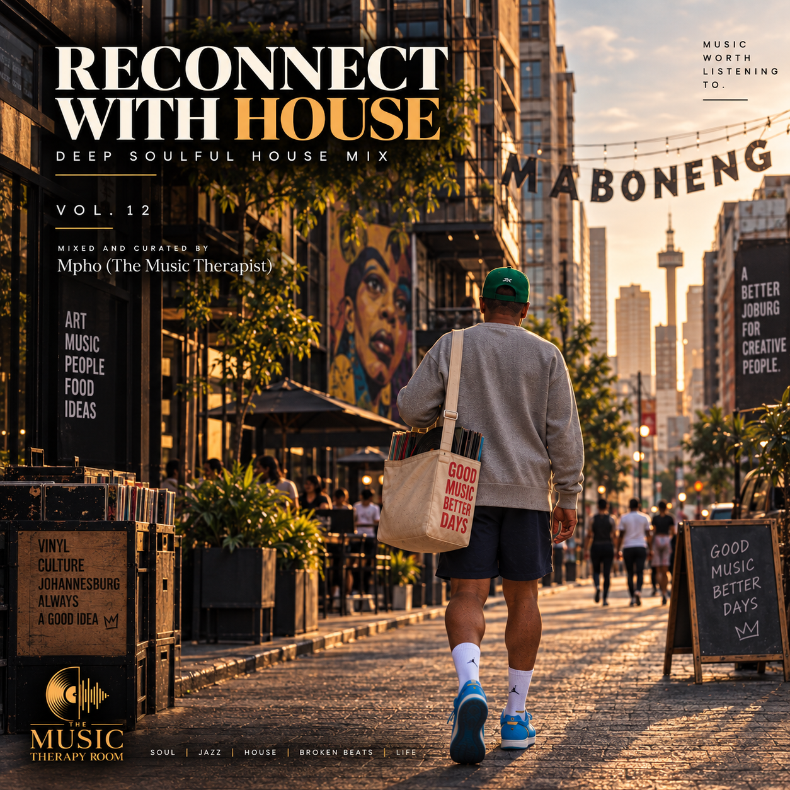
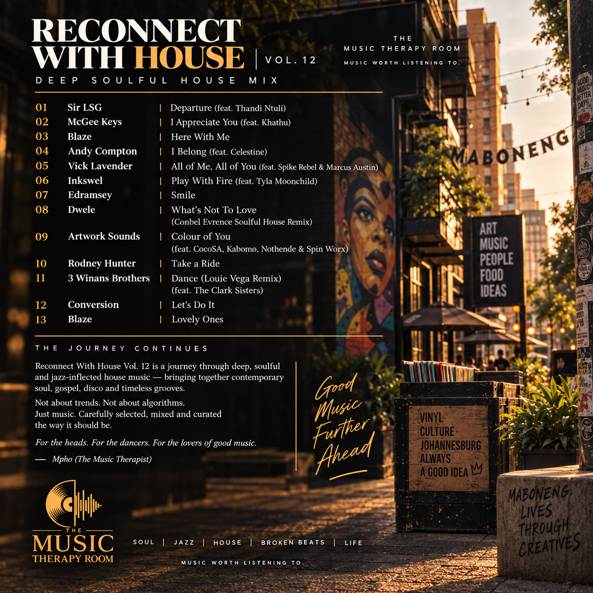

House music didn’t appear from nowhere.
The records were already dancing before house had a name.
Reconnect With House Vol.12 is a journey through deep, soulful and jazz-inflected house music — connecting contemporary South African soul, classic house sensibilities, gospel, neo-soul, disco and broken-beat influences.
Not about trends. Not about algorithms. Just music — carefully selected, mixed and curated the way it should be.
The artwork


Track by track
Sir LSG — Departure
Atmospheric, soulful and rooted in the South African house continuum.
McGee Keys — I Appreciate You
Warm, musical and human — setting the emotional language of the session.
Blaze — Here With Me
A defining soulful-house moment, bringing the deep vocal tradition into the heart of the mix.
Andy Compton — I Belong
Organic, jazz-touched house that keeps the journey moving without losing its warmth.
Vick Lavender — All of Me, All of You
Deep, vocal and expressive — equally at home in a room or on headphones.
Inkswel — Play with Fire
The groove bends toward broken-beat and funk territory, widening the palette without breaking the flow.
Edramsey — Smile
A lighter emotional turn, keeping the set soulful while opening the door to brighter textures.
Dwele — What’s Not To Love (Conbel Evrence Soulful House Remix)
Neo-soul meets soulful house — a bridge between the song-driven world and the dancefloor.
Artwork Sounds — Colour of You
A contemporary South African soul-house connection that carries the session forward with feeling.
Rodney Hunter — Take a Ride
A touch of electro-funk and disco-minded movement adds another colour to the journey.
3 Winans Brothers — Dance
Gospel, soul and house converge — a reminder of the spiritual thread running through the music.
Conversion — Let’s Do It
A disco-rooted selection that brings an older dancefloor vocabulary into the modern session.
Blaze — Lovely Ones
The closing chapter: warm, soulful and timeless — leaving the door open for the next session.
Different records. One conversation.
The point isn't to make every track sound the same. It's to hear the conversation between them.
Soulful house carries fingerprints from gospel, disco, jazz, funk, R&B, broken beat and wider African and American dance-music traditions. Vol.12 follows those connections rather than chasing a single era or formula.
For the heads. For the dancers. For the lovers of good music.
A record crate with a point of view.
I don't want a mix to simply play. I want it to take you somewhere.
Reconnect With House Vol.12 is about rediscovering that feeling — when a record makes you stop, listen, and wonder where the next one is going to take you. Deep house, soul, jazz, gospel, broken beats and everything in between, selected because it belongs to the journey.
Mpho (The Music Therapist)
The Music Therapy Room
Press play.
Put on your headphones. Turn the lights down. Let the records do the talking.
LISTEN TO VOL.12 ↗